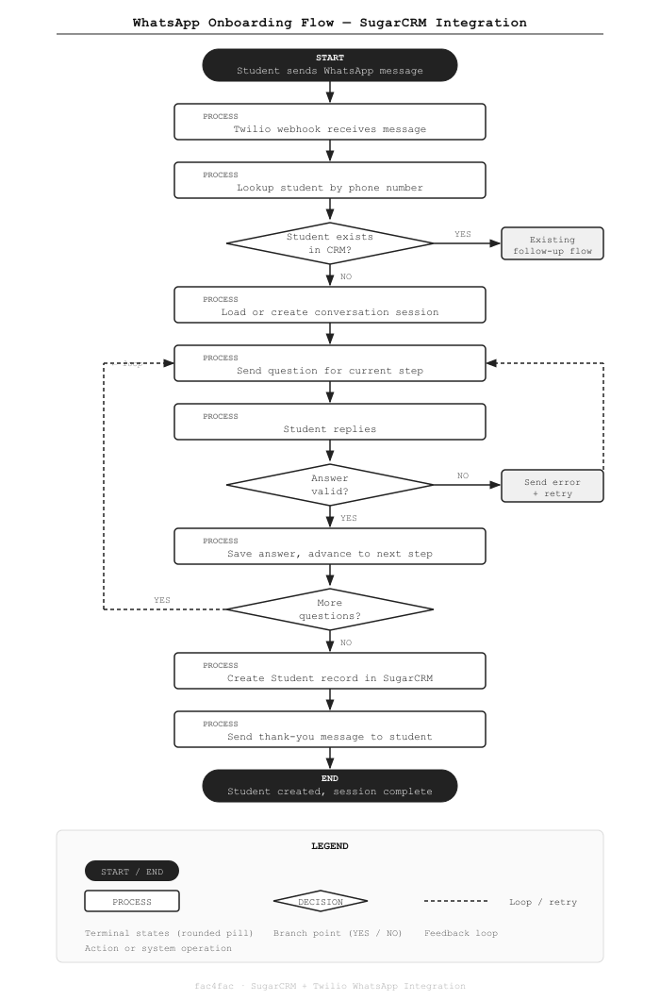

Automating Student Onboarding via WhatsApp in SugarCRM
A multi-step conversation engine that captures leads and creates CRM records automatically — no staff required.
The Problem
When prospective students first contact the school via WhatsApp, staff had to manually collect their details and create a record in SugarCRM by hand. There was no way to capture a lead from WhatsApp without a person in the loop — meaning leads that arrived outside business hours were missed or delayed.
The school was already using Twilio to send outbound WhatsApp messages from SugarCRM, but there was no system to handle replies from unknown numbers and turn them into student records automatically.
What We Built
A multi-step conversation engine built directly into SugarCRM. When an unknown number sends a WhatsApp message, the system intercepts it, guides the student through a configurable intake questionnaire, validates each answer, and creates the student record — with zero admin involvement.
Known students are still routed through the existing follow-up flow without any disruption.
How It Works

The flow works like this:
- A student sends any WhatsApp message to the school's number
- Twilio delivers it to the webhook in SugarCRM
- The system checks whether the phone number already exists as a student record
- If yes → routed to the existing follow-up flow (no change)
- If no → the Conversation Engine takes over, loads or creates a session, and sends the first question
- The student answers each question one by one; invalid answers trigger an error message and the question is resent
- Once all questions are answered, a Student record is created in SugarCRM and the student receives a thank-you message
Key Technical Decisions
- State machine, not a script. Each conversation is a session with a current step number. Questions can be reordered, enabled/disabled, or mapped to any CRM field without changing code. Admins manage the question bank directly from SugarCRM.
- Phone number normalization. The system handles Israeli, US, and Vietnamese number formats before matching, so duplicate records from format variations are avoided.
- Media guard. If a student sends a photo or voice message, the system replies politely that only text is supported and resends the current question automatically.
- Partial completion. If a student stops responding mid-flow, automated reminders are sent at 2 hours and 24 hours. If minimum data (name + phone) has been collected and the student still doesn't respond, a partial student record is created so the lead isn't lost.
- Multi-number support. Multiple Twilio sender numbers can be registered in SugarCRM. Each conversation session locks to the number the student first contacted.
What Changed
- Student record creation from WhatsApp is now fully automated for new contacts
- Leads that arrive outside business hours are captured without any staff intervention
- Admins can view full chat history, manually resume sessions, or override any step from inside SugarCRM
- The existing outbound messaging workflow for known students is completely unchanged
Stack
Building a similar integration? We work with SugarCRM and custom CRM automations. Get in touch →